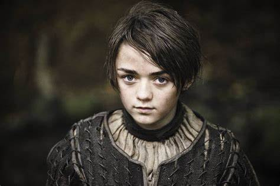
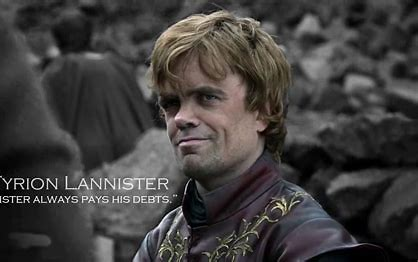

A Game of Thrones————权力的游戏 |
主页 人物 剧照 短评影响 |
|  | Arya Stark, from George R. R. Martin's "A Song of Ice and Fire," is a resilient and independent character. Born into the Stark family in Westeros, she embarks on a quest for justice, mastering stealth and combat. Her tenacity and pursuit of retribution make her a beloved figure in the fantasy realm. 《冰与火之歌》中的艾莉亚·史塔克是一位坚韧独立的角色。作为史塔克家族的成员，她踏上正义之路，精通潜行和战斗。她的坚韧与复仇的追求使她成为奇幻领域中备受喜爱的人物。 |
|  | Tyrion Lannister, from George R. R. Martin's "A Song of Ice and Fire," is a cunning and intelligent dwarf. Despite societal prejudice, he navigates Westeros' political intrigue with wit. Known for his sharp mind and strategic acumen, Tyrion emerges as a key player, defying expectations. 提利昂·兰尼斯特，出自乔治·R·R·马丁的《冰与火之歌》，是一位狡猾聪明的侏儒。尽管受到社会偏见，他以机智应对维斯特洛的政治阴谋。以敏锐的头脑和战略眼光而闻名，提利昂超越预期成为关键人物。 |